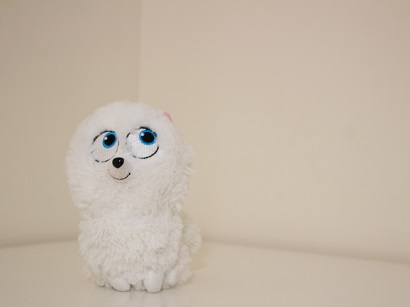

About me
My name is Hanane, and I am from Morocco. It my 5th years in Canada. I hold a BBA but have never worked because I was a full-time mom to my three beautiful kids. Recently, I decided to return to study after 13 years, and my kids are very proud of me. It's certainly challenging, but mothers are accustomed to facing daily challenges, and education is one of them. I will do my best to succeed.
When I decided to come back to college, I chose a program completely different from what I studied before. I was seeking something that would allow my artistic side to shine. I aspire to have a career filled with creativity and beauty, which led me to choose IMD. Another reason for this choice is the hope for more remote job options as a freelance worker, enabling me to take care of my kids while working at the same time.
To keep your balance, you must keep moving.
-Albert Einstein
My Hobbies
- Cooking and sharing Moroccan food
- Photography
- Reading